The steering column shroud hides the bottom center of the screen. Above y 740 the full width is usable. Below y 740 the usable area narrows along the shroud into two corners. Each corner fits one tall readout, as stock UI1 uses the corners for RPM and km/h. A card or a three-cell row does not fit. Each layout below spends the corners on the room the shroud took away. Builds on the round 4 and round 5 layouts.
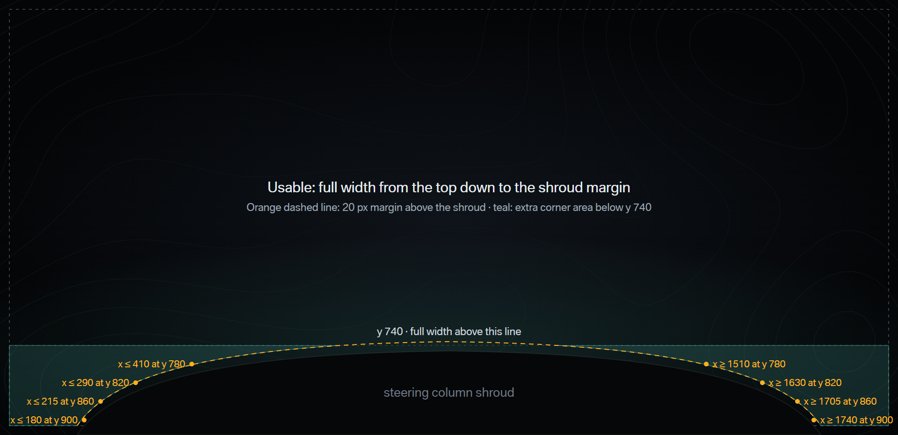
Both options move fuel out of the center column. The speed returns to 240 px, and the card clears the shroud with room to spare.
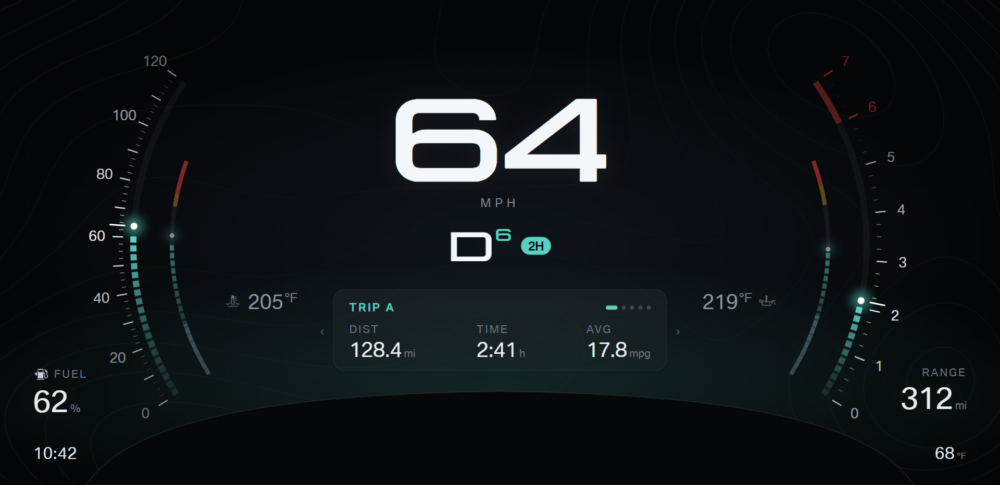
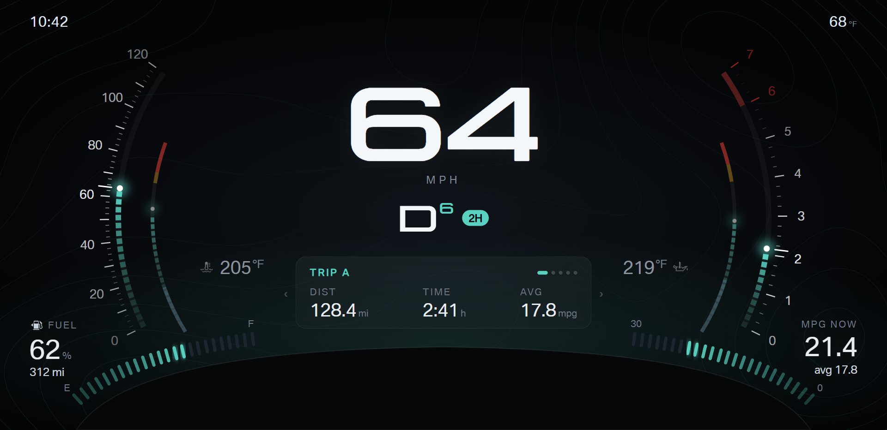
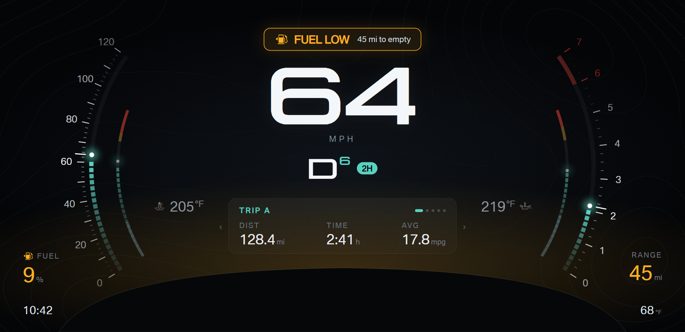
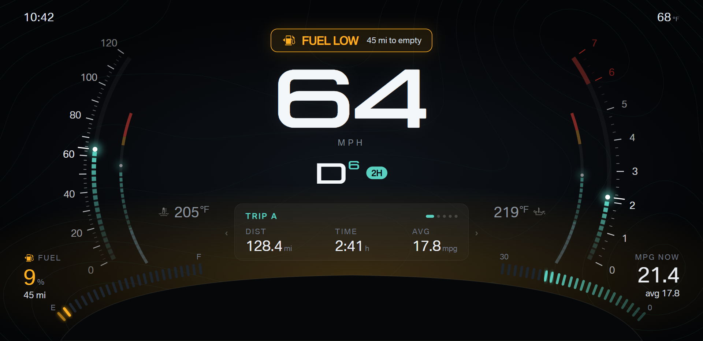
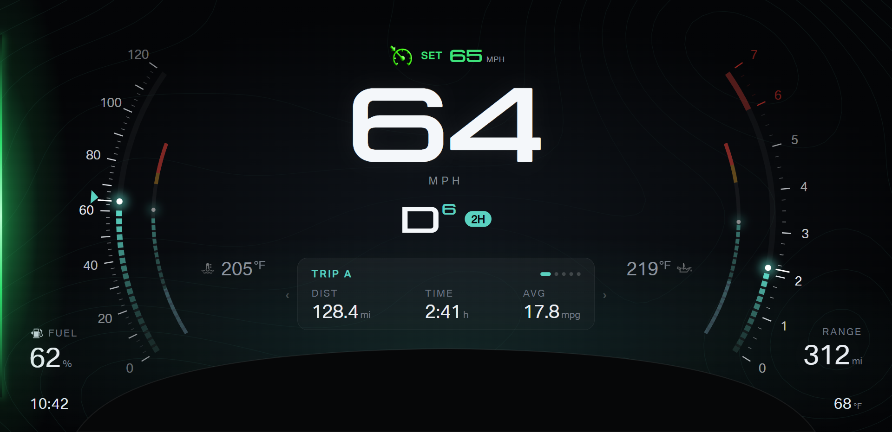
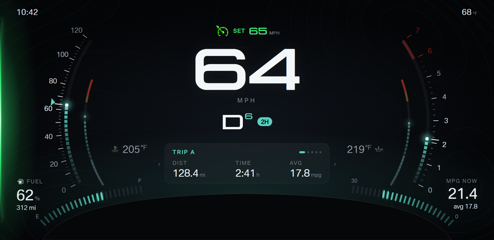
The halo and its fuel arc sit over the shroud, so the corners cannot give the halo more room. These options move the side content instead.
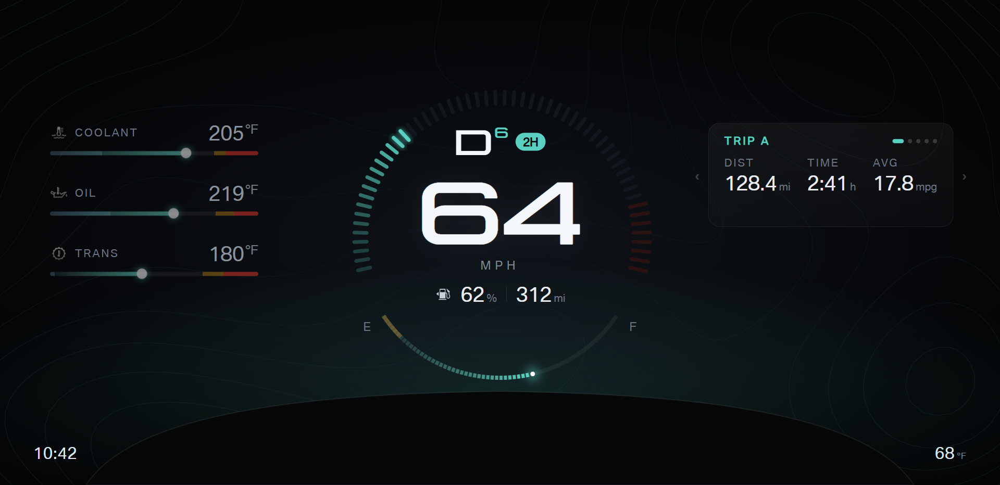
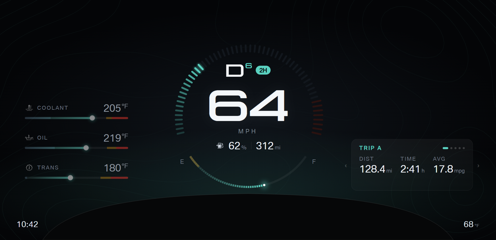
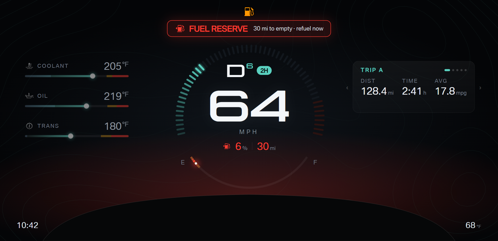
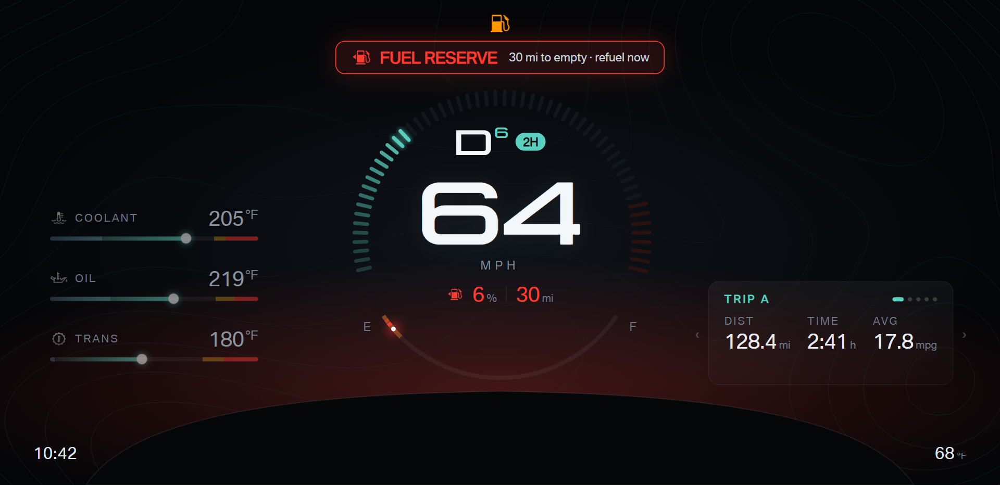
Both options move RPM and the trailer brake into the corners. The card moves up under the speed, and the temperature columns get their full 180 px back. Grade moves under fuel.
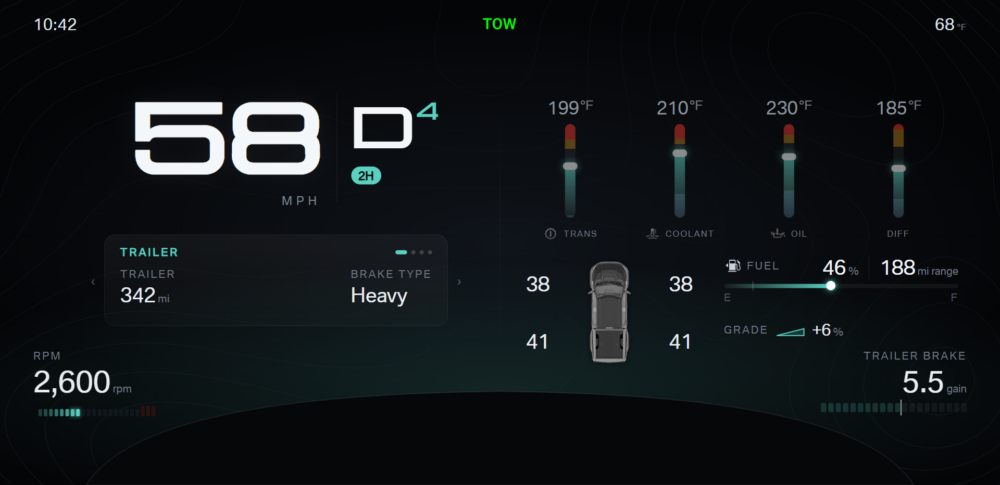
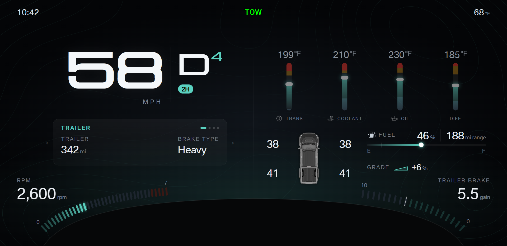
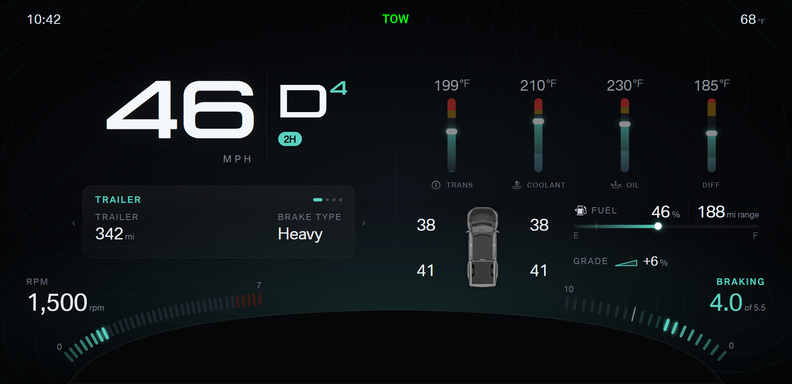
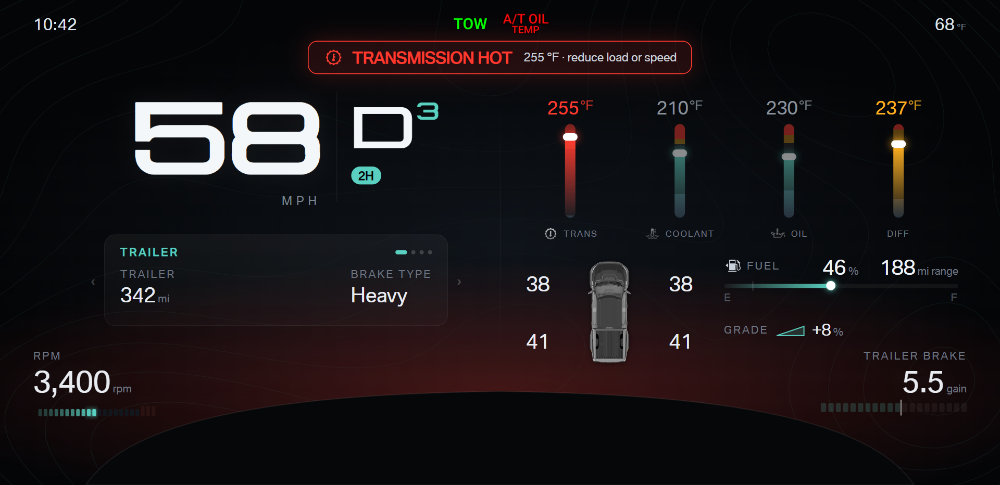
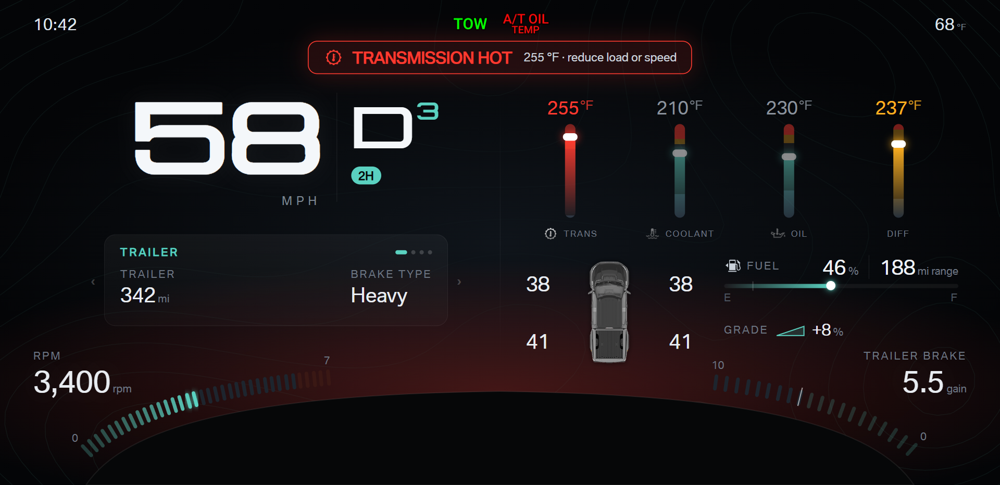